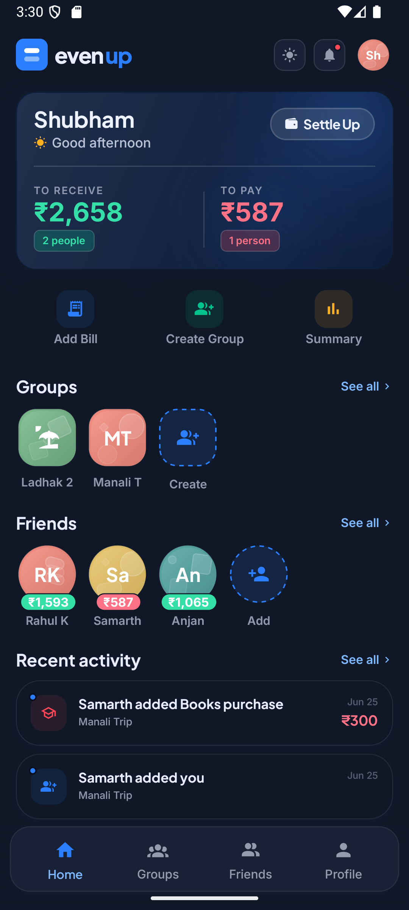
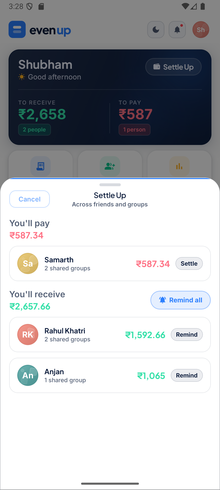

Architecture ownership
I define frontend structure, state boundaries, API integration patterns and component contracts so product teams can scale without losing maintainability.
Senior / Staff Frontend Engineer
I am Shubham Gupta, a Staff Engineer with 12+ years of experience turning complex product requirements into reliable React, Next.js and TypeScript systems for distributed teams.
professional summary
I help product teams turn complex frontend requirements into systems that are understandable, reusable and dependable in production.
I define frontend structure, state boundaries, API integration patterns and component contracts so product teams can scale without losing maintainability.
I build complex, API-driven product surfaces with React, Next.js and TypeScript, balancing user experience, performance, accessibility and release confidence.
I mentor developers, review architecture and pull requests, and align design, backend, product and business stakeholders around pragmatic frontend decisions.
selected engineering work
A personal expense-splitting product for friends and groups, built as a production-oriented mobile app with a supporting web/deep-link surface.
Design and build a reliable shared-expense experience across groups, friends, bills, settlements, invites and offline-friendly mobile flows.
Worked full stack across product UX, React Native screens, shared design-system usage, Supabase RPC/Edge behavior, auth, notifications and release readiness.
Used Expo Router, React Native, TypeScript, React Query, Jotai, NativeWind and Supabase, with focused smoke tests and app-quality checks around critical flows.
A real product codebase demonstrating end-to-end ownership: frontend architecture, backend integration, offline behavior, legal/account flows and production release discipline.


A product used to monitor and communicate with employees and resources in potentially unsafe locations.
Support a complex, data-heavy frontend where teams needed reliable UI composition, real-time information and clean integration with backend microservices.
Built reusable, performant React components, contributed to architecture, collaborated with design, product, business and backend teams, and improved testability.
Implemented a micro-frontend architecture with Module Federation, Redux Toolkit state boundaries, Material UI patterns and focused Jest/RTL coverage.
A more maintainable frontend foundation for a sensitive operational product, described without exposing private architecture, data or client details.
A subscriber-facing portal rebuilt with a modern frontend architecture.
Rebuild a customer-facing portal while creating a frontend structure that could support shared web and mobile logic in a monorepo.
Led the frontend revamp from the ground up, established component structure, mentored developers and coordinated with design, backend and product teams.
Used Next.js, TypeScript, Jotai and Material UI, organized components through Atomic Design and integrated subscriber-specific .NET APIs.
A cleaner product foundation for ongoing feature delivery, with stronger separation between application state, API integration and UI composition.
Migration of legacy web experiences to reusable AEM-React components.
Modernize legacy web experiences while keeping content-managed pages reusable, responsive and aligned with business requirements.
Created AEM-React components, integrated APIs and Redux state, led five developers through planning and pull-request reviews, and partnered across functions.
Used Storybook for component development, structured dynamic component logic, integrated reusable data flows and independently deployed a Chrome extension.
Reusable frontend building blocks for modernized enterprise web experiences with a delivery process that supported review and maintainability.
career timeline
Focused on senior frontend delivery, React and Next.js architecture, reusable systems, technical direction, mentoring and remote collaboration.
Led AEM-React migration work, reusable components, API integrations, cross-browser quality and five-developer delivery support.
Built AEM components, collaborated with UX, business and backend teams, and supported responsive enterprise web delivery.
Translated UX and product requirements into production interfaces and worked with Drupal teams on implementation.
Delivered client web experiences using HTML, CSS, JavaScript, jQuery and WordPress in Agile delivery environments.
core expertise
technical stack
React, Next.js, TypeScript, JavaScript, Redux Toolkit, Jotai, REST API integrations
Material UI, Tailwind CSS, Atomic Design, design systems, Storybook, responsive and cross-browser development
Micro-frontends, Module Federation, monorepos, frontend state boundaries, API-driven product architecture
React Testing Library, Jest, pull-request review, maintainability, mentoring, distributed-team collaboration
AEM, reusable content-managed components, frontend modernization, stakeholder coordination
HTML, CSS, Sass, jQuery, WordPress, Drupal, Bootstrap, Git, Jira, Confluence
working style
Map users, data flows, ownership boundaries, dependencies and release risks before changing the UI surface.
Create patterns that teams can adopt quickly without heavy process or architecture that slows delivery.
Use pull-request review, testing discipline and component feedback loops to improve maintainability.
Work closely with design, backend, product and business stakeholders so frontend decisions stay grounded.
personal experiments
A public space for exploring React patterns, UI behavior and practical implementation ideas without exposing confidential client work.
contact
Available for senior frontend roles, React/Next.js contracts, architecture consulting and technical-lead opportunities with international remote teams.